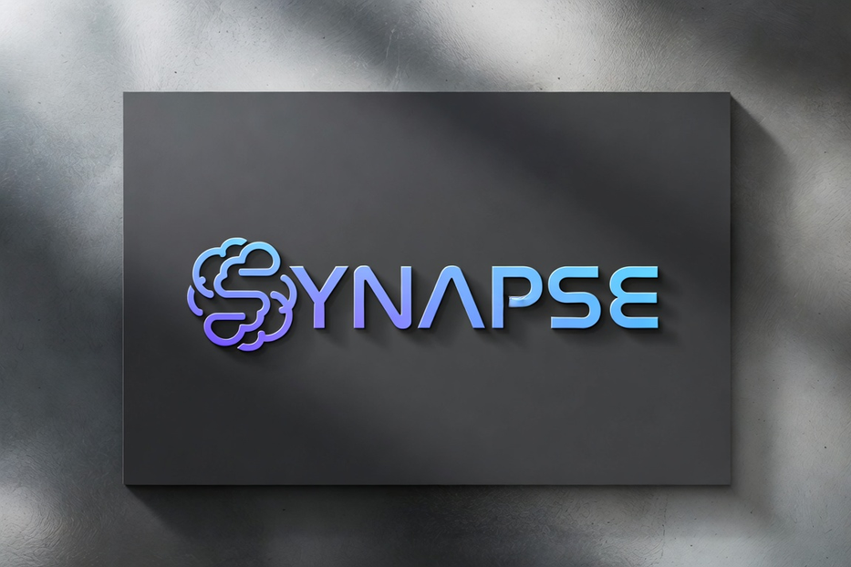

What it measures
- Engagement and distraction patterns
- Fatigue and eye behavior signals
- Session trends and alert flags

Synapse processes webcam landmarks locally on your machine, estimates broad attention patterns during a session, and saves local reports for review. Raw video is not saved.
Start with python synapse_launcher.py first-run on Windows.
Onboard, monitor, review the report, and replay the session locally before any billing work begins.